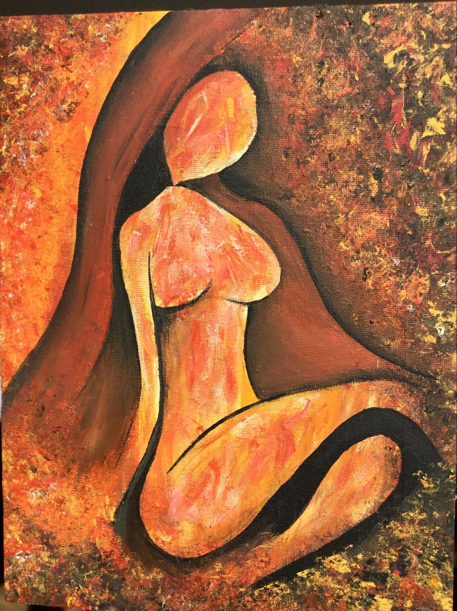
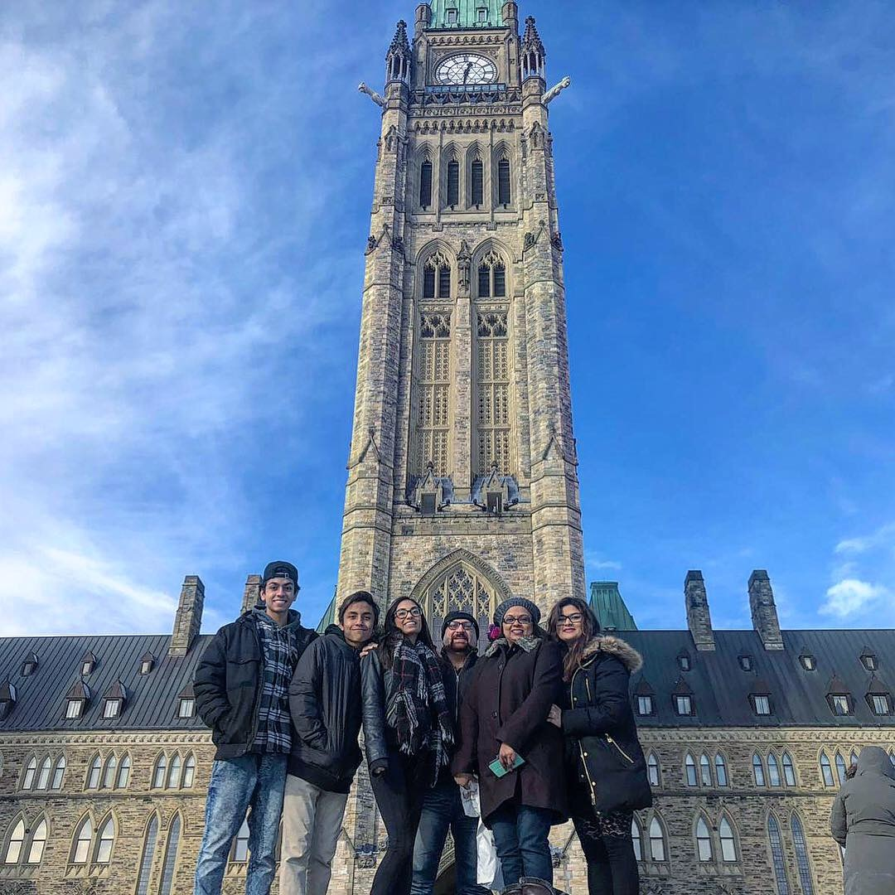

PUSH BACK THE DARKNESS
The Cloak
My name is Saira Gokal and I am a student at Carleton University who grew up in Toronto with a beautiful family of two younger brothers, sister and loving parents. I initially attended an Islamic private school for 8 years and had a Muslim father and a Hindu mother as role models. I was born with the ability to accept more than one viewpoint in life as I learnt how to pray in temples with my hands collapsed together or raised open in the air in mosques every Friday. I was no stranger to discrimination as schoolmates told me my mother belonged in hell for being a Hindu or when I received stares when I walked out of school with my hijab. At only the age of 8 I understood what it was like to feel not welcomed in a country where diversity is praised and freedom is practiced.
When I think of what it means to be a Canadian I think about the usual statements people make about how welcoming we are and our diversity. Most importantly I think about how I am not a Canadian because of my skin colour or my religion, but one because I share the same values and dreams of not only my community members but all of Canada. Moreover, what these communities look like are up to us and we need to take action to make them the welcoming places we want them to be. However when I think about the shootings in Quebec I still feel emotional pain with burning questions like, “What if that was my father or uncle?”. The feeling goes beyond words to something I can only illustrate with your help to interpret what you believe the feelings are incorporated in this painting I created.
With an acrylic medium and dollar store paint brushes, I hoped to illustrate the fear I felt when I hear actions of hate crime in Canada and the world. My identity is not restrained to only one religion or culture and can be represented by the cloak above the woman’s figure. This figure is me, but can be you, or anyone in your life. The cloak represents who we are and surrounds our body to protect ourselves with the values and hopes we choose to surround ourselves with. The feelings of hate, discrimination and violence are all the burning embers around her which slowly feed off her cloak as the cloth meshes into darkness. However, these same coloured embers begin to look like her as well. She becomes a part of the violence which she choose not to be. In other words, I was very close to the shootings in Quebec and although I choose not to be a part of violence it was still an action that happened near me and affected me. I hope to demonstrate that by building a stronger cloak made from fibers of diversity, positive interactions within our community, and being more welcoming we can create in a sense a social fabric (pun intended) to mirror the environment we want to be a part of. Therefore, protect ourselves and our community from the violent acts and one day eradicate them for good with the efforts put into weaving ourselves into the social infrastructure we want our cloaks to be.

--
Saira Gokal
Ottawa, ON

(Left to Right): Sajjad, Roshan, Sabeela, Tahseen, Shanti, and Saira Gokal